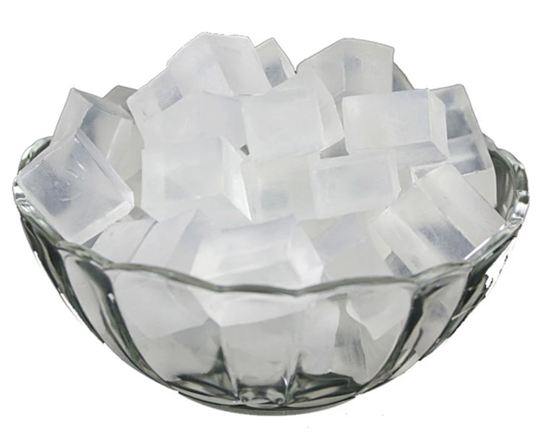
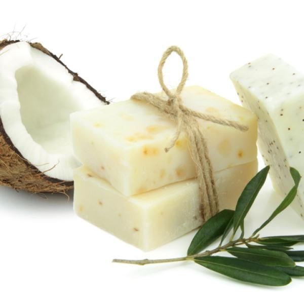
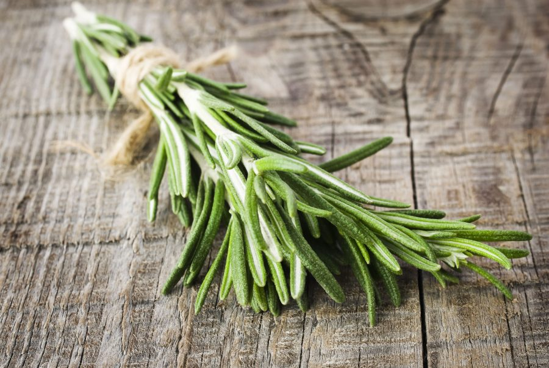

Eran los primeros dias de Mayo, y se acercaba el día de la madre, la idea estaba clara, solo faltaba la ejecución, pero aun faltaba determinar los ingredientes, el tipo de jabón a utilizar y sus proporciones para crear un regalo del día de la madre fuera de lo común, así comienza la creación de los primeros jabones de café.
A continuación, los productos existentes, ingredientes, y sus propiedades:
Antes de continuar hay que señalar que todos nuestros productos, contienen café restante del proceso de extraccion mediante cafeteras espressos, así, para nombrar sus propiedades, debemos indicar que el café es antioxidante, hidratante, vigorizante y exfoliante. Por tal razón, es un excelente producto para mantener la piel joven y reafirmada.
El jabon de glicerina, tiene propiedades especiales respecto de otros jabones, por lo que es ideal describirlas para tener en cuenta, las cuales se suman a cada una de las distintas graduaciones y especies del producto final:
Por su carácter neutro es adecuado para eliminar el acné, espinillas, granos y piel grasa. También ayuda a combatir problemas de sequedad como tirantez, picores y descamación por su poder hidratante. El jabón de glicerina,es un excelente producto para tratar la dermatitis y la eczema

Ingredientes: Jabon de Glicerina cristal, aceite de oliva, escencia limón, canela.
Propiedades y usos: exfoliante de baja abrasion (es suave sin dejar de sentirse en la piel), ayuda a la renovación celular, aporta efectos antioxidantes a la piel estimulando la circulación y la pérdida de grasa, ademas de ayudar a la neutralizacion de olores percibidos (es decir, luego de usarlo, tendremos una percepción olfativa neutra y superior)

Coco / Rosa de café al 10%
Ingredientes: Jabon de Glicerina coco, aceite de oliva, escencia de vainilla.
Propiedades y usos: El coco y, sobre todo el aceite de coco, es un alimento muy nutritivo para todas las capas de la piel y, además, las hidrata en profundidad. Por ello, es uno de los mejores productos naturales para incluir en cremas, desodorantes, jabones y demás productos que se usen en la piel. Por este motivo, es especialmente bueno para pieles secas
efecto limpiador y exfoliante, ideal para pieles grasas, secas y sensibles, tratamiento natural contra el acné, antienvejecimiento, bueno para tratar infecciones en la piel

Romero / Rosa de café al 8%
Ingredientes: Jabon de Glicerina natural, aceite de oliva, romero.
Propiedades y usos: Es ideal para combatir las pieles grasas y con tendencia a tener acné, gracias a sus propiedades antiséptica y astringente. Sus propiedades antioxidantes permiten combatir el envejecimiento de la piel de manera natural y saludable